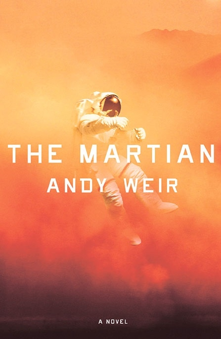
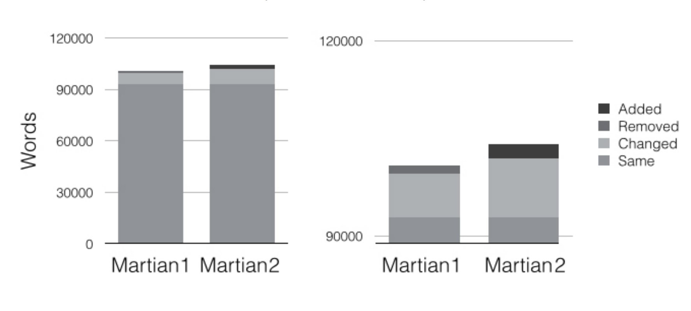
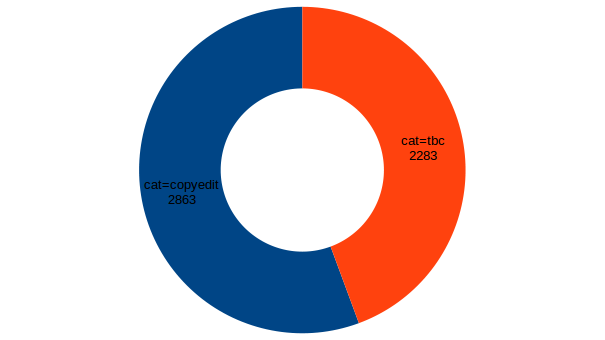
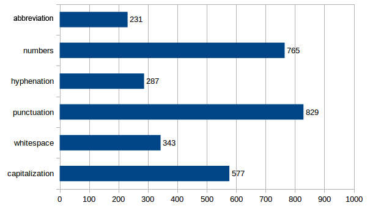
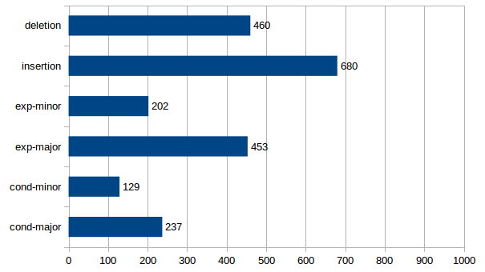
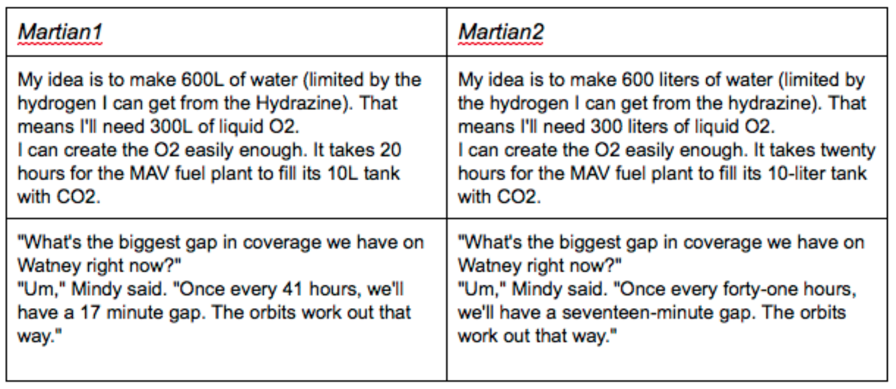
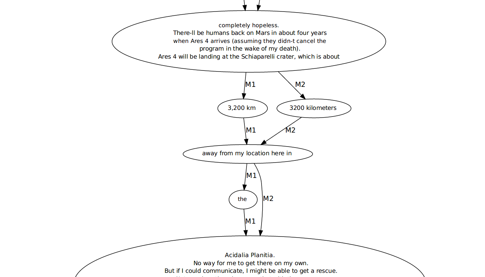
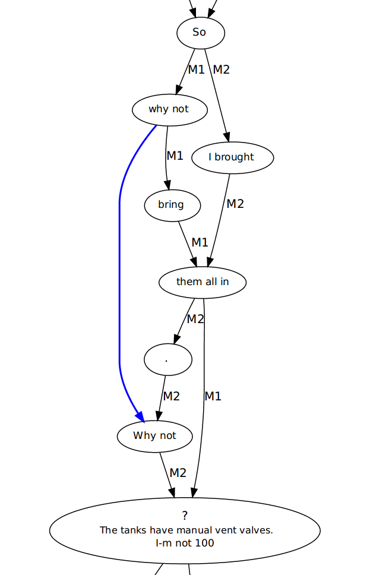
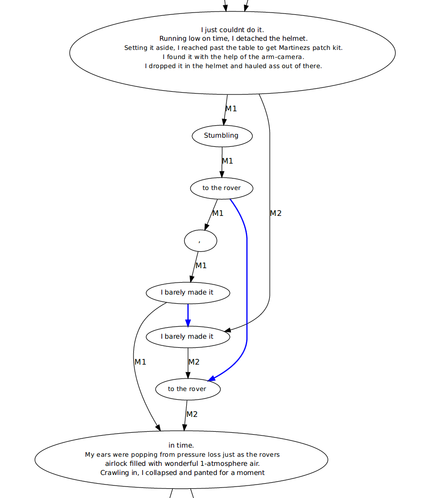
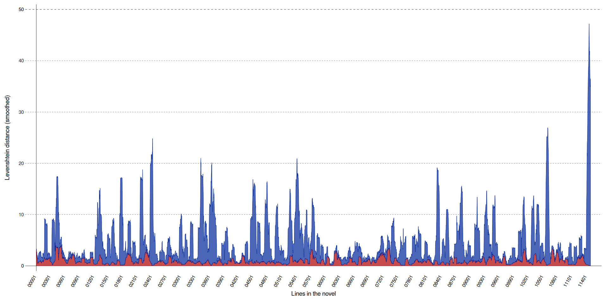

<!doctype html>
<html lang="en">
<head>
<meta charset="utf-8">
<title>Close/Machine-Reading</title>
<meta name="author" content="Christof Schöch">
<meta name="description" content="Slides">
<meta name="apple-mobile-web-app-capable" content="yes">
<meta name="apple-mobile-web-app-status-bar-style" content="black-translucent">
<meta name="viewport" content="width=device-width, initial-scale=1.0, maximum-scale=1.0, user-scalable=no, minimal-ui">
<link rel="stylesheet" href="css/reveal.css">
<link rel="stylesheet" href="css/theme/simple.css" id="theme">
<link rel="stylesheet" href="lib/css/zenburn.css">
<script>
var link = document.createElement( 'link' );
link.rel = 'stylesheet';
link.type = 'text/css';
link.href = window.location.search.match( /print-pdf/gi ) ? 'css/print/pdf.css' : 'css/print/paper.css';
document.getElementsByTagName( 'head' )[0].appendChild( link );
</script>
<!--[if lt IE 9]>
<script src="lib/js/html5shiv.js"></script>
<![endif]-->
</head>

<body>
<div class="reveal">
<div class="slides">
<section data-markdown="" data-separator="^\n---\n" data-separator-vertical="^\n--\n" data-charset="utf-8">
<script type="text/template">

<!--  vvvvv THIS IS WHERE THE CONTENT GOES! vvvvvvv  -->

## Close/Machine-Reading Two Versions of Andy Weir's _The Martian_
<hr/>
<br/>
<br/>
<br/>
<small>[Erik Ketzan](http://www.bbk.ac.uk/arts/research/research-students/english-and-humanities/erik-ketzan) (Birkbeck, London) &nbsp; · &nbsp; [Christof Schöch](http://www.christof-schoech.de/en) (Würzburg Univ.)</small>
<br/>
<hr/>
<br/>
<br/>
<small>Session _Machine Reading/Narrative Machines_<br/><br/>ACLA Conference, Utrecht, The Netherlands, 6.-9.7.2017<br/><br/>https://christofs.github.io/martian/</small>


---
# Overview
<br/>
* [Introduction](#/2)
* [Methods and Results](#/3)
* [Conclusion](#/4)


---
# Introduction


--
## 

* self-published online in 2011 (=Martian1)
* published with Crown Publishing in 2014 (=Martian2)


--
## Aims
<br/>
* to identify what changed between the two variants of The Martian
* to propose a methodology for comparing self-published and later-edited novels
* to bring a critical perspective to the strengths and weaknesses of a variety of qualitative and technical methods

--
## Hypothesis
<br/>
* The Martian is unusual in being a bestselling work of science fiction
* Martian2 becomes more "mainstream", i.e. socialised, domesticated, appealing to a general audience. 
* How does the edit align the text with stylistic features commonly found in bestsellers?
* See Archer and Jockers on aspects overrepresented in bestsellers: 
	* scenes of human interaction and relationships
	* low amount of offensive content
	* highs and lows of sentiment 
 

--
## Related Work
<br/>
* digital genetic criticism: e.g. van Hulle 2008
* studies exploring variants of contemporary fiction:
    * Yufang Ho 2011 on John Fowles’s novel The Magus
    * Martin Paul Eve 2016 on David Mitchell’s Cloud Atlas
    * Peter Stockwell 2000 on *The Poetics of Science Fiction*

--
## Data
<br/>
* two plain text files of the variants of The Martian.
* Martian1: PDF from Andy Weir’s website
* Martian2: scanned and OCR'ed print copy
    

---
# Methods and Results


--
## Basic collation

--
### Words added, removed or changed


--
## Automatic classification of edits

--
###Breakdown by category

script-identifiable (blue) vs. other edits (red)

--
###Breakdown of script-identifiable edits


--
###Breakdown of other edits



--
## Cumulative Effect of the Script-Identifiable Copyedits

--
### Numbers and abbreviations



--
## Close Reading of Other Edits

--
### Reduction of profanity
<br/>
* Words like “fuck” and “shit” are substantially reduced (by about 33% and 15%, respectively),
* numerous other words and phrases are softened with “lesser” profanity or simple non-profanity 
* Similarly, crude and sophomoric humor is cut in key instances.
* This aligns with Archer/Jockers

--
### Watney's emotions
<br/>
* Martian1: relatively little text is devoted to Watney’s emotions or inner world
* Martian2: Watney expresses significantly more emotion: he misses his family and friends more and expresses despair, loneliness, and introspection more.
* Again, this aligns with Archer/Jockers

--
## Detecting transpositions with CollateX

--
### What are transpositions?
<br/>
* Transpositions: text that has been moved rather than deleted or inserted
* Professional editing: is it based on words, sentences, larger units?
* Detecting transpositions: CollateX (see Dekker and Middell 2011)
* Practical details: see http://dragonfly.hypotheses.org/954

--
### CollateX output: variant graph
<a href="img/chapter2_example.png"></a>

--
### Simple transposition in chapter 4
<a href="img/chapter4_transposition.png"></a>

--
### Complex transposition in chapter 14
<a href="img/transposition_chapter14-2.png"></a>

--
### Overview of transpositions
<br/>

| type                    | count |    % |
|-------------------------|------:|-----:|
| punctuation             |    28 |  22% |
| single words            |    43 |  34% |
| multi-word expressions  |    55 |  44% |
| **total**               |   126 | 100% |


--
## Edits Over the Course of the Novel


--
### [Levenshtein distance](#/5/1) over textual progression
<a href="img/progression.png"></a>
<small>(red = script-identifiable edits; blue = other edits)</small>

---
# Conclusion


--
### Findings
<br/>
* the edits to The Martian align it more with stylistic features overrepresented in bestsellers
* in the case of The Martian, the editor was polishing rather than rewriting the novel 

--
### Typology of edits
<br/>
* see distinction between the “accidentals” and “substantives” used by the Greg-Bowers tradition
* Our typology: focused on types which can be identified automatically, based on surface features

--
### Further Research
<br/>
* relative frequency and function of parts of speech
* quantifying the amount of syntactic change
* legal issues regarding the texts
* perform Sentiment Analysis (Archer/Jockers thesis)

--
### References

<small>

* Archer, J. and Jockers, M. (2016). The Bestseller Code. New York: Saint Martin's Press.
* Dekker, R. and Middell, G. (2011). Computer-Supported Collation with CollateX: Managing Textual Variance in an Environment with Varying Requirements. Supporting Digital Humanities 2011. University of Copenhagen, Denmark. 17-18 November 2011.
* Eve, M. P. (2016). “You have to keep track of your changes”: The Version Variants and Publishing History of David Mitchell's Cloud Atlas, Open Library of Humanities. https://olh.openlibhums.org/article/10.16995/olh.82/ 
* Greetham, D. (1992). Textual scholarship: An introduction. New York/London: Garland Publishing.
* Ho, Y. (2011). Corpus Stylistics in Principles and Practice: A Stylistic Exploration of John Fowles’ The Magus. New York: Continuum.  
* Hunt, J. W. & Mcilroy, M. D. (1975). An algorithm for differential file comparison. Computer Science. 
Modern Language Association (2011). Reports from the MLA Committee on Scholarly Editions, Guidelines for Editors of Scholarly Editions, available at: https://www.mla.org/Resources/Research/Surveys-Reports-and-Other-Documents/Publishing-and-Scholarship/Reports-from-the-MLA-Committee-on-Scholarly-Editions/Guidelines-for-Editors-of-Scholarly-Editions 
* Navarro, G. (2001). A guided tour to approximate string matching. ACM Computing Surveys. 33 (1): 31–88. doi:10.1145/375360.375365.
* Schöch, C. (2016). Detecting Transpositions when Comparing Text Versions using CollateX. The Dragonfly’s Gaze. http://dragonfly.hypotheses.org/954
* Stockwell, P. (2000). The Poetics of Science Fiction. New York and Oxon: Routledge.
* TEI-L (2016). Types of Edits. TEI-List. http://tei-l.970651.n3.nabble.com/Types-of-edits-tp4028495.html
* van Hulle, D. (2008). Manuscript Genetics, Joyce’s Know-How, Beckett’s Nohow. Gainesville: University Press of Florida.
* Weir, A. (2011). The Martian. Self-published. 
* Weir, A. (2014). The Martian. New York: Crown Publishing Group. 

</small>


--
<br/>
<br/>
## Thank you! 
<br/>
<br/>
<br/>
<small>Erik Ketzan and Christof Schöch, 2017</small>
<br/>
<small>https://christofs.github.io/martian/<br/></small>
<br/>
<br/>
<br/>
<a href="https://creativecommons.org/licenses/by/4.0/">CC-BY 4.0</a>
<br/>


---
# Extra slides

--
### Levenshtein distance?
<br/>

|1|2|3|4|5|6|7|8|9|10|
|-|-|-|-|-|-|-|-|-|-|
|-|-|M|A|R|T|I|A|N|S|
|S|A|M|A|R|I|T|A|N|-|

<br/>
* 2 insertions
* 2 substitions
* 1 deletion
* = Levenshtein distance of 5


<!--^^^^^^^ DON'T TOUCH UNLESS YOU KNOW WHAT YOU'RE DOING :-) ^^^^^^^-->

</script>
</section>
</div>
</div>

<script src="lib/js/head.min.js"></script>
<script src="js/reveal.js"></script>
<script>
// Full list of configuration options available at:
// https://github.com/hakimel/reveal.js#configuration
Reveal.initialize({
    controls: true,
    progress: true,
    history: true,
    center: true,
    transition: 'slide', // none/fade/slide/convex/concave/zoom
    // Optional reveal.js plugins
    dependencies: [
        { src: 'lib/js/classList.js', condition: function() { return !document.body.classList; } },
        { src: 'plugin/markdown/marked.js', condition: function() { return !!document.querySelector( '[data-markdown]' ); } },
        { src: 'plugin/markdown/markdown.js', condition: function() { return !!document.querySelector( '[data-markdown]' ); } },
        { src: 'plugin/highlight/highlight.js', async: true, callback: function() { hljs.initHighlightingOnLoad(); } },
        { src: 'plugin/zoom-js/zoom.js', async: true },
        { src: 'plugin/notes/notes.js', async: true }
        ]
    });
</script>
</body>
</html>
